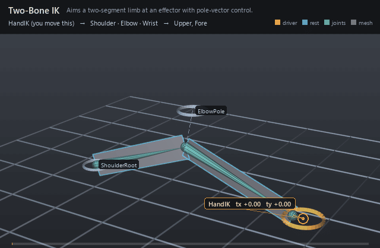

| On this page | |
| Section | Concepts |
| Source | docs/concepts/how-operators-fire.md |
A UsdRig rig is not a pile of nodes with hidden wires. It is a piece of USD namespace, and where a prim sits in that namespace is what decides when it runs. Once you can read the hierarchy, you can predict the frame.
The mental model ¶
Everything lives under one RigExecRoot. That prim is the rig: the
partition, the namespace root that controls, joints, solvers and movers are
discovered beneath, and the unit that gets compiled and evaluated.
Inside it there are four jobs:
- Controls carry the animation. A control is the
animator's handle. Keys go on its
avars:*channels, composed over itsrest:space. Nothing in the rig revises a control — its base frame is its posed frame — so everything downstream simply follows it. - Solvers and constraints pose joints. An FK chain, a two-bone IK or an aim constraint reads controls and writes frames onto joints. A joint is where solved posing becomes readable data.
- Weights say how much. A static weight is one
scalar per moved point, painted once and held for the shot. Bound through a
mover's
rigExec:weightObject, it scales that mover's effect per point. - Movers move geometry. A matrix mover reads a provider's rest-to-posed delta and carries points by it, per point, under the bound weight.
A frame runs the pose work first and the geometry work after it, so a mover never has to wait in the hierarchy for a solver — it only has to name which version of the joint it wants.
The order you can predict ¶
The compiler walks the final composed namespace of the whole rig, and it reverses sibling order: the bottom sibling executes first, the top sibling executes last, and a parent runs after all of its descendants. This is exactly the usdview stack presentation, read from the bottom up.
Two consequences are worth memorising:
- Sibling order comes only from the parent's child order. Not from
relationship-target order, not from plugin registration, not from which
worker finishes first. If you want a different order, change the composed
order —
reorder nameChildren = [...]on the parent, or nest one prim under the other. Layer strength participates in that composed order exactly as a reorder opinion does. - Solvers and constraints on the same joint are one stack, not two
phases.
rigExec:jointsis an ordered write, not an exclusive claim. Any number of solvers may name a joint and any number of pose constraints may name it onrigExec:moves; they are steps of one kind in one stack, in that same bottom-first order. A constraint below a solver runs first and feeds it; a constraint above it revises its output.
Because each step receives the frame the step below it left, a solver takes its
joints' incoming frames as its rest reference. Two-bone IK re-measures
root-to-mid and mid-to-end on every evaluation, so a step below it
re-proportions the limb rather than merely re-orienting it. An FK chain
instead composes its control deltas onto whatever incoming frame it finds. A
joint no earlier step wrote simply hands over its authored rest:space, which
is why a rig whose constraints all sit above its solvers is unchanged by any of
this. Put Solvers near the bottom of the rig root to get the classic
"solve, then revise" shape — that is what every shipped example authors.
Steps that share no joint and no data are independent: overlapping writes serialise, disjoint chains stay parallel. Nothing about that changes the answer, only how fast it arrives.
Read phases: which version a mover sees ¶
A mover names the moment it reads its provider with
rigExec:transformReadPhase:
base— the joint after its last solver. Note that this is not "before every constraint": a constraint that fell below the last solver is already folded in, through that solver's rest reference.preceding— the value standing immediately before this one mover's own application in the point stack. It is only meaningful to a mover that has a place in that stack.final— the top of the chain, after every writer of that target.- a checkpoint — an absolute prim path in place of a token, meaning "the
provider as it stood right after that named step". Naming the
Solversscope means "after the last solver" (which is exactlybase); naming theMoversscope means "after the last constraint".
def RigExecMatrixMover "HandSkin" (
prepend apiSchemas = ["RigExecMoverAPI"]
)
{
rel rigExec:moves = </Asset/Geom/Hand.points>
rel rigExec:transform = </Asset/Rig/Joints/Shoulder/Elbow/Wrist>
uniform token rigExec:transformReadPhase = "final"
}
Change that one token to base and the hand card follows the FK solve but
ignores the aim constraint stacked above it. Nothing else in the file moves.
A frame, walked through ¶

two_bone_ik.usda is a two-card arm. Under the rig root, in composed order:
Controls, Solvers, Joints, Weights, Movers.
At frame 1001 the HandIK control sits at its rest, x = 5.85, just inside
full reach of the 3 + 3 unit chain, so the arm holds a slight bend. By frame
1006 its avars:tx spline has reached -2.35 and avars:ty 1.5.
- Controls are read.
HandIKcomposes its avars overrest:spaceand publishes a posed frame.ElbowPoleandShoulderRootpublish their rests unchanged — they are unanimated, and they are still real inputs. - The solver fires.
ArmIKis the only step in the pose stack. It measures its two bones from the framesShoulder,ElbowandWristcarry on entry — here, their authored rests, because nothing sits below it — then solves the chain in the plane through the pole, withinputs:softnessat0.15shaping the approach to full extension. - Joints are written. All three joints in
rigExec:jointsget new frames: the shoulder stays planted, the elbow swings out into the pole plane, the wrist lands on the effector. - Movers read them.
UpperSkinreadsShoulderandForeSkinreadsElbow, both atfinal, each scaled by a constant1.0static weight — the rigid-attachment idiom. Each four-point card is carried by its joint's rest-to-posed delta. - The viewer sees the orange upper card and the green forearm card hinge at the elbow as the hand swings in and lifts, then unwind by 1012.
Common mistakes ¶
- "My constraint does nothing." It is probably below the solver that
overwrites the joint. Move its scope above the
Solversscope — i.e. earlier in composed order — or accept that it is now feeding the solve. - "My skinning ignores the constraint." The mover is reading
base. SetrigExec:transformReadPhase = "final", which is what every shipped example does. - "Two movers on one mesh fight." They do not fight; they stack, bottom sibling first, descendants before their parent. Reorder or renest to choose. Stacking matrix movers is how you layer rigid follows, not how you blend influences on one point — use the skin mover for that.
- "I changed the relationship order and nothing happened." Target-list permutation changes neither mapping nor result. Change the namespace.
- "Editing a joint rest changed my limb proportions." It is meant to: IK measures bone lengths from rests every evaluation and caches nothing.
Glossary ¶
- Avar — an animator-facing scalar parameter on a control, such as
avars:txor an IK blend. - Rest — the bind-pose frame a prim carries in
rest:space, measured against its namespace parent's rest. - Posed — the evaluated frame for the current time.
- Provider — anything that publishes a frame other things can read: a control or a joint.
- Aggregate — one packed array of frames published by a solver, whose
element N is written to
rigExec:joints[N]. - Stack — the ordered list of steps writing one target, be it a joint's solvers and constraints or a mesh's movers.
- Phase — which version of a provider a reader asks for:
base,preceding,final, or a named checkpoint.
Where this is specified ¶
Traversal order, the one pose stack over solvers and constraints, rest
references, base/preceding/final and AtPrim checkpoints: spec §4.2
(Mover targeting, hierarchy order, and last-writer semantics). Phase
boundaries: §6.1. Bottom-up order and the other terms: §16.
More concepts ¶
 Baked and dynamic evaluation
Baked and dynamic evaluationThe two ways UsdRig computes a frame, how to switch between them, and what each one is for.
- Tutorial: a rolling ball rig
Build the classic bouncing-ball rig in usdview, node by node, and make the roll a consequence of the travel instead of a channel to key.